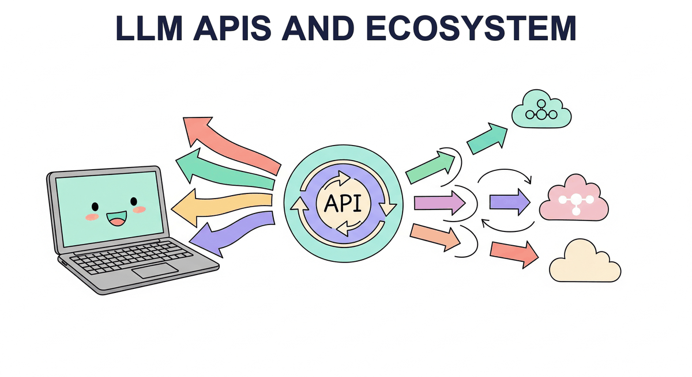

"The best interface is the one that disappears."
Pip, Invisibly Helpful AI Agent

Part II ended with you understanding LLMs from the inside. Part III turns to using them from the outside. The starting point is the simplest possible interface: an API call. This chapter covers how the major providers expose their models (OpenAI, Anthropic, Google), the patterns they share (chat completions, function calling, streaming, structured output), and the patterns that distinguish them. By the end you can swap providers in an afternoon.
Chapter Overview
Large language models are only as useful as the interface through which you access them. For the vast majority of production applications, that interface is an API: a set of HTTP endpoints exposed by OpenAI, Anthropic, Google, or an open-source serving framework. Knowing how to call these APIs correctly, efficiently, and reliably is a core skill for any engineer building with LLMs.
This chapter covers the full lifecycle of working with LLM APIs. We begin with the landscape of providers and their architectural differences, then move into structured output techniques and tool integration patterns that let models interact with external systems (a prerequisite for building AI agents). Finally, we tackle the engineering challenges of running LLM calls in production: routing across providers, caching, retry strategies, circuit breakers, cost management, and observability.
For most practitioners, LLM APIs are the primary interface to model capabilities. This chapter teaches you to work with chat completions, manage rate limits, handle errors gracefully, and optimize costs. These API patterns form the backbone of every application built in Parts V and VI.
Learning Objectives
- Call the Chat Completions API (OpenAI), Messages API (Anthropic), and Gemini API (Google) with correct parameter usage
- Implement streaming responses using Server-Sent Events and understand when streaming is appropriate
- Use function calling and tool use to connect LLMs to external systems, a foundation for AI agents
- Enforce structured output with JSON mode, response schemas, and validation libraries like Instructor and Pydantic, building the foundation for production information extraction
- Build provider-agnostic LLM clients using abstraction layers such as LiteLLM, enabling flexible hybrid ML and LLM pipelines
- Implement production-grade error handling with retry logic, circuit breakers, and graceful degradation, essential for production safety
- Design caching strategies (semantic caching, prompt caching) to reduce cost and latency, complementing inference optimization techniques
- Set up token budget enforcement, cost tracking, and observability using AI gateways
Prerequisites
- Chapter 05: Decoding Strategies and Text Generation (understanding of temperature, top-p, and generation parameters)
- Chapter 10: Inference Optimization and Efficient Serving (context for why APIs are structured as they are)
- basic familiarity with Python, HTTP requests, and JSON
- API keys for at least one provider (OpenAI, Anthropic, or Google) for hands-on labs
Sections
- 13.1 API Landscape & Architecture OpenAI Chat Completions, Anthropic Messages API, Google Gemini, AWS Bedrock, Azure OpenAI, open-source endpoints, Batch API for cost reduction, streaming with SSE.
- 13.2 Structured Output & Tool Integration Function calling and tool use across providers, JSON mode and response schemas, Pydantic validation with the Instructor library, building reliable tool pipelines.
- 13.3 API Engineering Best Practices LiteLLM for provider routing, caching strategies (semantic cache, prompt cache), retry with exponential backoff, circuit breakers, Portkey/Helicone gateways, token budget enforcement, production error handling patterns.
- 13.4 Reasoning Models & Multimodal APIs Working with reasoning models (o1, o3, DeepSeek-R1), extended thinking APIs, multimodal inputs (images, audio, video) across providers, and best practices for integrating reasoning and multimodal capabilities into applications.
What's Next?
In the next chapter, Chapter 14: Prompt Engineering, we learn the techniques for crafting effective prompts, from few-shot examples to chain-of-thought reasoning.